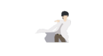
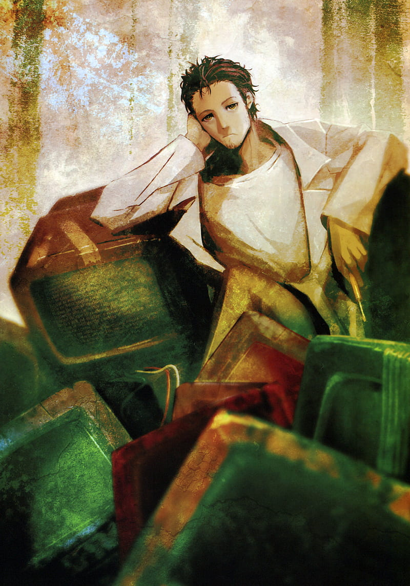

Nedir Bu Steins Gate?

Steins; Gate özünde bir görsel roman oyunudur, lakin ben bu oyunu oynamadım ve bu sitede
sizlere animesi hakkında bilgiler verip görüşlerimi sunacağım.
Dikkat! Bu sitede bolca spoiler bulunacaktır.
Steins Gate bir grup gencin zamana müdehale etmeyi ve zamanda sıçrama yapmayı keşfetmesi ile başlar lakin
zaman
hakkında araştırmalar yapan tek kişiler kendileri değildir. SERN isimli örgüt gerçek yüzünü
gösterince henüz 18 yaşında olan ana karakterimiz örgütle savaşmak ve
sevdiklerini korumak için zamanı kullanmak
zorunda kalacaktır. Seri onun psikolojik durumu ve karakter gelişimine büyük önem verir ki bu kendi kısmının konusu :D

Neden Özel?
Her ne kadarenim için bu seriyi en özel şey yapan etmen ana karakteri
olsa da, bu serinin müthiş yaptığı pek
çok şey var. Harika senaryosunu anlatmama gerek bile yok, ilk bölümlerde
alelale izlediğin bir şey beklemediğin
anda bam diye karşına çıkabiliyor. Öte yandan karakterleri bana ulaşmış,
kendileri ile bağ kurdurtturabilmişti.
örnek olarak SERN'de üst düzey bir yetkili olan "kötü adam" Braun karakterinin
son diyalogları kendisiyle empati
kurabilmemi sağlamıştı. Ayrıca kendini izlettiren bir seri Steins;Gate. İlk 12 bölümde
sıkılıp bırakanların sayısı
çok fakat şahsen ben bu ilk 12 bölümde de sıkıldığımı söyleyemem. Karakterlere ısındığımdandır herhalde,
ilk 12
bölüm beni sıkmadı hiç. Devamında ise animenin temelinin aslında ilk 12 bölümde hazırlandığı karşıma çıkınca
büyük bir
keyif almıştım. Harika finalinden bahsetmemek ayıp olur, iki serinin finallerini kıyasladığımda hangi-
sini daha iyi
bulduğuma karar veremedim hiçbir zaman. Yaşadığı onca şeyin ardından fikirleri oturmuş, "escapist"
halinden arınmış, olgun bir
Okabe Rint- Hououin Kyouma'nın ayakta durup harika final sahneleriyle iyi sona
ulaştığını görmek büyük ihtimalle bir animeden
alabieceğim en büyük zevk olacak. Eşsiz müziklerine de yer verme-
mek hata olur! Solidute, Gate of Steiner, Re-awake gibi şarkı
ve müzikleri hala severek dinlerim. Bu noktada bu mü-
zikleri besteleyenleri kesinlikle taktir etmek lazım. Peki bu anime
anlattığın kadar harika mı? Hiç yok mu bu
animenin kötü yanları? Diye soracak olursanız eğer... Tabii ki var. Maalesef bir iki
yer mantık hatası ile dolu. İlk seri-
de pek olmasa veya göze çarpmasa bile serinin ikinci sezonu olarak geçen Steins;Gate 0 adlı
yapımın sonlarına doğ-
ru yaşanan Suzuha ve Mayuri adlı karakterlerin onlarca "özel eğitimli" askerler tarafından çevrelenip
vurulamama-
ları, daha da ileriye gidip, hepsini öldürebilmeleri oldukça sahne ve komik bir kısım. Ama bu sahneden başka
bir kusur söylememi isteyecek olursanız sanırım aklıma gelmiyor.
Kronolojik Sıra
- Steins Gate ilk 22 bölüm
- Steins Gate 23 (B)
- Steins Gate 0
- Steins Gate 23-24
- Steins Gate Ova
- Steins Gate Dejavu
- Steins Gate
- Steins Gate Ova
- Steins Gate Dejavu
- Steins Gate 0
Onore Ediyoruz!